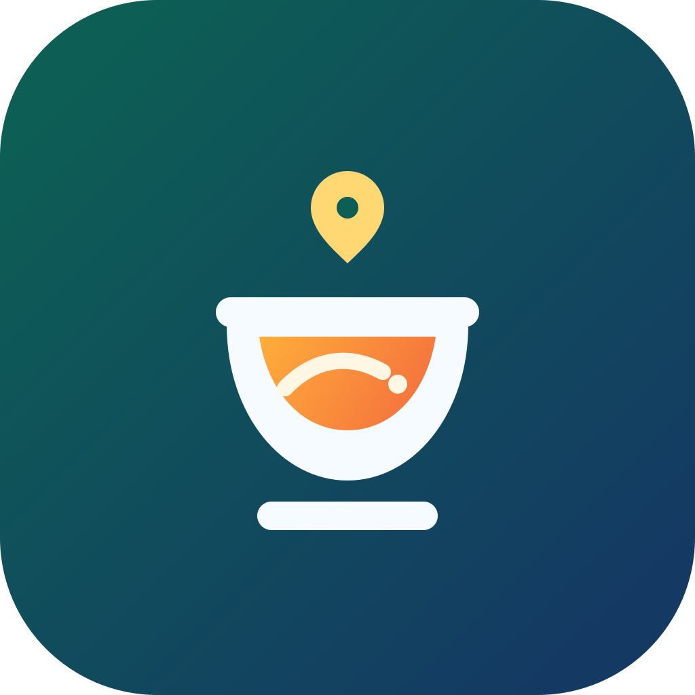
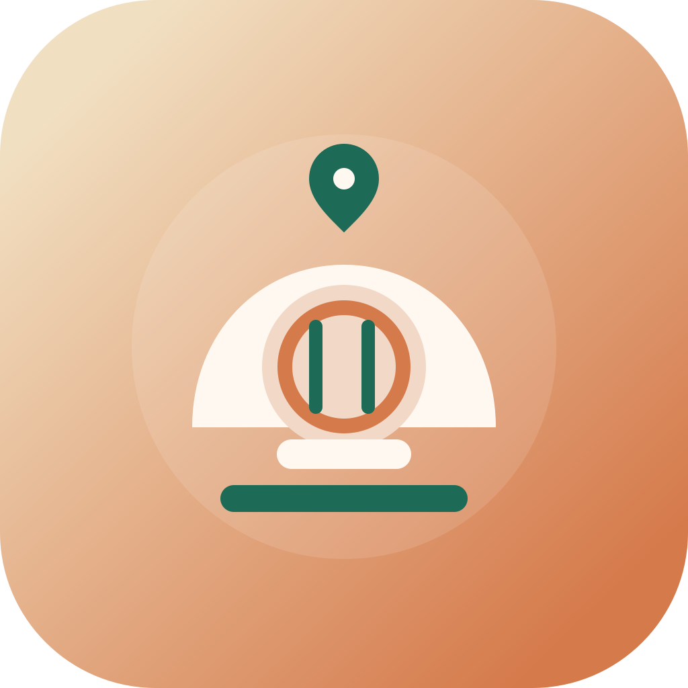
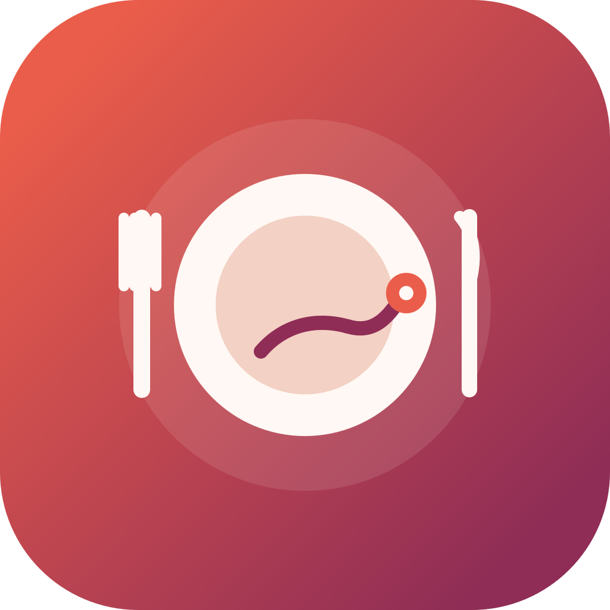

5. Food Pin
The strongest literal option. It reads as location plus plated meal almost immediately.
This round leans much harder into food cues: plate, fork, bowl, steam, and serving cloche. Each one still keeps a hint of map or discovery language so the brand remains tied to planning and guidance.
The strongest literal option. It reads as location plus plated meal almost immediately.

Feels more modern and app-like, with a bowl as the hero and route-inspired steam above it.

More premium and hospitality-driven. Good if MealMap should feel curated and meal-service adjacent.

A softer plate-first symbol with route detail inside. More balanced between food and planning.